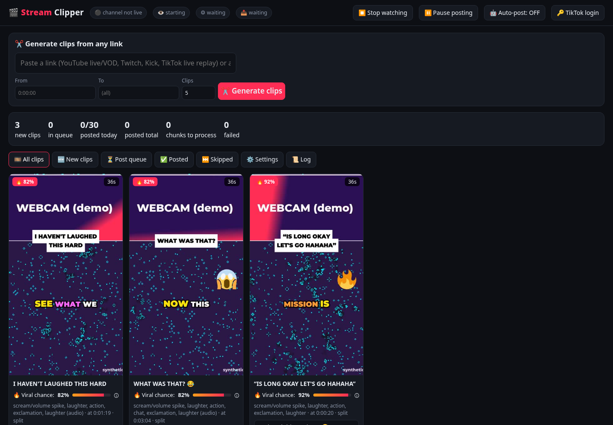
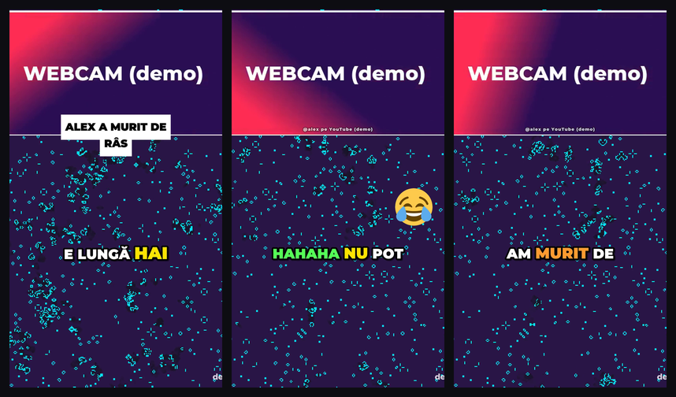
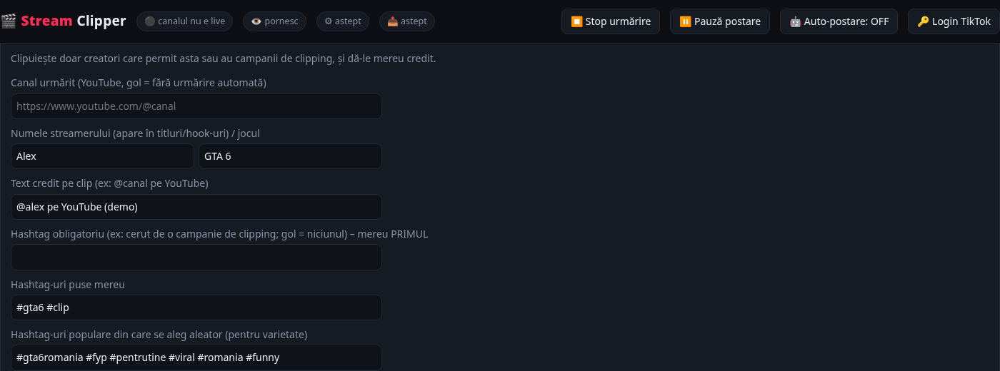

A free Windows app that records a stream, transcribes it with Whisper, finds the loud and funny moments and renders 9:16 clips with word-by-word captions. You review every clip before anything is posted.

Watches a YouTube channel and records the live from the start (DVR), or takes any link yt-dlp supports or a local video file.
faster-whisper large-v3 with word timestamps, language forced to Romanian (configurable).
Volume spikes, screams and laughter, keywords, chat activity. Optional LLM judge (OpenAI-compatible API or local Ollama).
ffmpeg, 1080×1920: webcam on top + game below (face detection), big word-by-word captions, hook, emoji, −14 LUFS audio.
Local dashboard: watch, edit the text, re-cut ±1 s. Auto-post is off by default.

These frames come from the built-in demo: a test video generated with ffmpeg (Game of Life as "gameplay", a labelled box as "webcam") and a scripted transcript. No real stream footage is used in the repo or on this page.
Try it yourself without a stream or GPU: python tools/demo.py
Clips are someone else's work. This tool is meant for a streamer's own editors, fan pages with permission, and official clipping campaigns.
required_hashtag is there for campaign tags).credit_text burns e.g. "@channel on YouTube" into every clip).C:\StreamClipper.setup.bat. It installs Python, ffmpeg, the packages and the Whisper model (15–20 min the first time) and creates a desktop shortcut.
Requirements: Windows 10/11, an NVIDIA GPU with ~6 GB+ VRAM recommended for Whisper large-v3 (CPU works with smaller models, much slower), ~10 GB disk. The dashboard is in Romanian for now.
I'm learning programming. This was built with AI-assisted coding, then tested and fixed by running it.
Uses the TikTok Studio website, not an official API, so it can break when TikTok changes the page.
Rule-based. It finds loud moments well; "funny" is harder. Review clips before posting.
GTA 6 streams are about to be clipped by thousands of accounts. I think clipping is fine with permission or a campaign, and with credit every time. Where do you stand?
Answer in the GitHub discussion